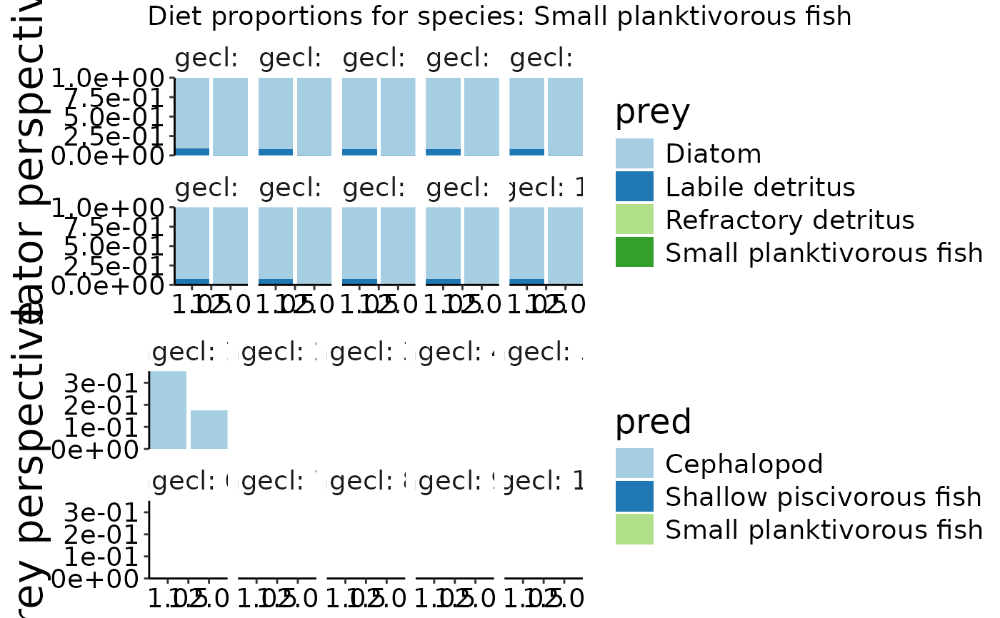

Visualize diet proportions form predator and prey perspective. The upper panel plot shows the predator perspective while the lower panel plot shows the prey perspective for a given group. Please note that this function only works with models based on the trunk code.
Arguments
- bio_consumed
Consumed biomass of prey groups by predatorgroup and agecl in tonnes for each timestep and polygon. Dataframe with columns 'pred', 'agecl', 'polygon', 'time', 'prey'. Consumed biomass in [t] is stored in column 'atoutput'. Should be generated with
link{calculate_consumed_biomass}.- species
Character string giving the acronyms of the species you aim to plot. Default is
NULLresulting in all available species being ploted.- wrap_col
Character specifying the column of the dataframe to be used as multipanel plot. Default is
"agecl".- combine_thresh
Number of different categories to plot. Lets say predator X has eaten 20 different prey items. If you only want to show the 3 most important prey items set
combine_threshto 3. As rule of thumb values < 10 are useful otherwise to many colors are used in the plots. Default is7.
See also
Other plot functions:
plot_bar(),
plot_boxes(),
plot_line(),
plot_rec(),
plot_species()
Examples
if (FALSE) { # \dontrun{
plots <- plot_diet(ref_bio_cons, wrap_col = "agecl")
gridExtra::grid.arrange(plots[[1]])
gridExtra::grid.arrange(plots[[7]])
# Use names() to get the species names!
names(plots)
} # }
plot <- plot_diet(ref_bio_cons, species = "Small planktivorous fish", wrap_col = "agecl")
#> Joining with `by = join_by(time, pred, agecl, prey)`
#> Joining with `by = join_by(time, pred, agecl, prey)`
gridExtra::grid.arrange(plot[[1]])
